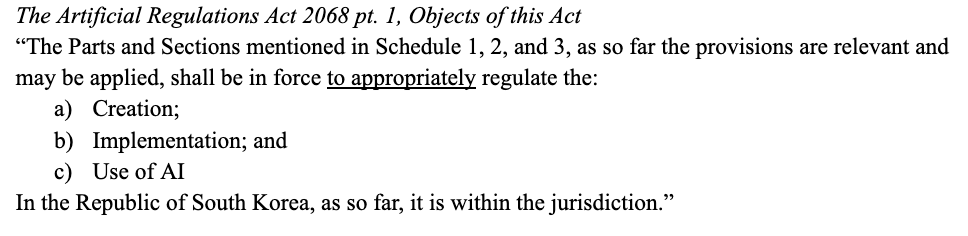

.png)
In response to new-founded concerns of AI usage, the Korean Government has announced a new statutory regime that will be implemented within the next year. We have put the relevant excerpt below:
Credit: KR Government Website

There are a few issues with this legislation that legal scholars have aptly summarised as follows:
1. Discretionary scope - The Executive has too much discretion to decide whether a company or individual’s AI usage is ‘appropriate’.
2. Preventative? Or just punitive in retrospect? - Some say that the Act is too broad in practice, and its provisions fail to be applied readily, given the proliferation of various LLM’s and AI in the Republic of South Korea.

Since the Republic of South Korea reduced their government subsidies and incentives for creatives, people have called for stricter regulations to properly facilitate artists and musicians amid competing LLM’s.
The Archivist will continue to report on shifting legal regulations with AI, and to keep track of our most recent posts, please submit your Universal-DIgUser-ID.